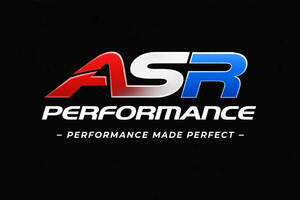

Trade Mark Journal No.2026/005 30 January 2026
UK00004324968 15 January 2026 (12)

- Class 12
- Vehicles; Vans [vehicles]; Windshields for vehicles; Electric trucks [vehicles]; Off-road vehicles; Scooters [vehicles]; Trailers [vehicles]; Automotive vehicles; Armored vehicles; Undercarriages for vehicles; Motor vehicles; Armoured vehicles; Windscreens for vehicles; Axles for vehicles; All-terrain vehicles; Golf cars [vehicles]; Two-wheeled vehicles; Unmanned vehicles; Towed vehicles; Sunroofs for vehicles; Vehicles and conveyances; Wheeled vehicles; Powertrains for land vehicles; Trolleys [vehicles]; Aeroplanes towing vehicles; Wheels for vehicles; Trains [vehicles]; Chassis of vehicles; Chassis for vehicles; Brakes for vehicles; Bumpers for vehicles; Airbags for vehicles; Amphibious vehicles; Autonomous vehicles; Air-cushion vehicles; Patrol vehicles; Electric vehicles; Vehicles (Electric -); Sleighs [vehicles]; Bodies for vehicles; Tyres for motor vehicles; Electric tractors [vehicles]; Safety belts for vehicles for motor cars; Tyres for two-wheeled vehicles; Self-driving transport vehicles; Bodies for motor vehicles; Suspensions for vehicles; Tires for two-wheeled motor vehicles; Military vehicles; Autonomous motor vehicles; Passenger motor vehicles; Trailers for motor land vehicles; Commercial vehicles; Two-wheeled motor vehicles; Hybrid vehicles; Hoods for vehicles; Motors for land vehicles; Land automotive vehicles; Armoured bodies for vehicles; Wheels for motor vehicles; Gears for vehicles; Driving motors for land vehicles; Tracks for armoured vehicles; Tyres for commercial vehicles; Seats for automotive vehicles; Utility vehicles; Propellers for vehicles; Seats for vehicles; Cars; Railway vehicles; Non-motorized scooters [vehicles]; Rail vehicles; Bodyworks for motor vehicles; Refrigerated vehicles; Gearboxes for land vehicles; Vehicles (Refrigerated -); Ashtrays for vehicles; Caissons [vehicles]; Chassis for motor vehicles; Motor vehicles (Chassis for -); Diesel motors for land vehicles; Axles for land vehicles; Camping vehicles; Mudguards for vehicles; Electric sunroofs for vehicles; Rocket-propelled vehicles; Submersible vehicles; Industrial vehicles; Tires for land vehicles; Motor land vehicles; Land motor vehicles; Doors for vehicles; Marine vehicles; Armoured land vehicles; Upholstery for vehicles; Land vehicles; Fuel tanks for vehicles; Windscreens for land vehicles; Petrol tanks for vehicles; Mobility vehicles; Thrusters for vehicles; Alarms for motor vehicles.
ibrahim khan
abubakr siddiq